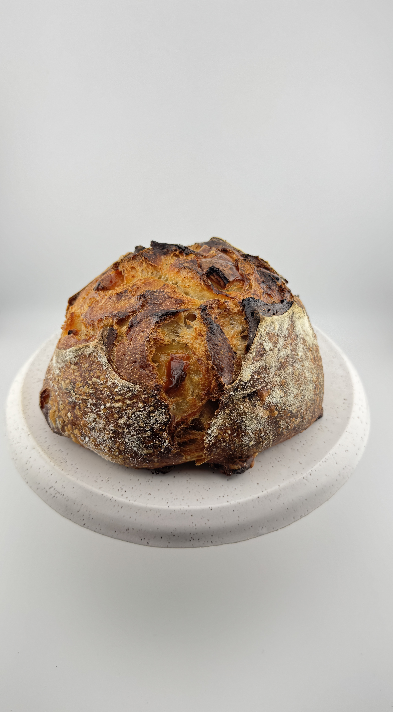
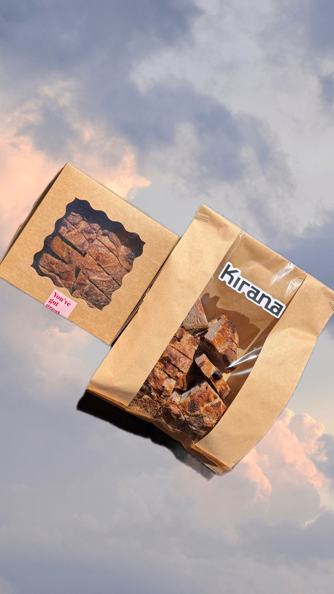
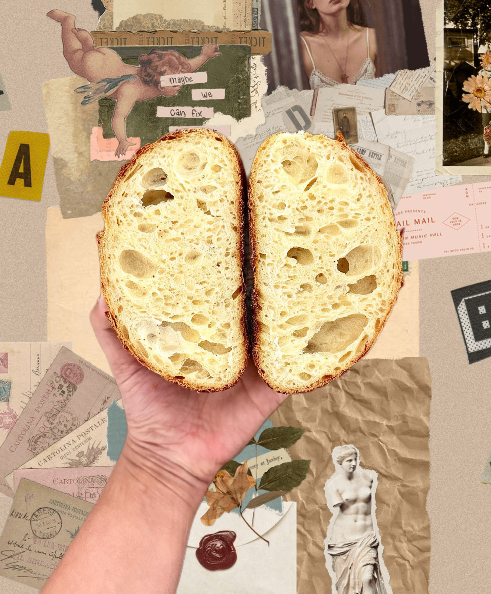

Love Fresh Bread? So Do We!

About Us
Kirana Bakehouse is a Microbakery specializing in Made-to-order Artisanal Sourdough, based in the Palo Alto/Menlo Park area.
Each loaf is hand-made and naturally leavened — crafted in small batches, fermented slowly, and baked to a golden crust.
No shortcuts. No commercial yeast. Just time, care, and traditional technique.
At its heart, Kirana Bakehouse is about more than just bread — it’s about bringing people together.
Our Seasonal Loaves are available À la carte or through a 4 week Subscription making it easy to enjoy fresh.
It is a catalyst for community, whether for a planned gathering or part of your everyday table, creating space for connections, both old and new, around the table.
SPRING/SUMMER Lineup
House White
Classic white sourdough - crisp crust envelops a light, open crumb
Everything Seasoning
A crown of sesame, poppy, garlic, onion, and salt on our house white
Pesto
Subtly infused with basil pesto for soft, aromatic elegance
Olives
Carefully folded olives with a hint of herbes de Provence
Cheddar
Delicate sharp cheddar pockets melt into creamy, savory richness
Cheddar & Jalapeño
Sharp cheddar and gentle jalapeño flecks create layered savoriness with quiet spice
Strawberry & White Choc
Strawberry essence mingles with creamy white chocolate for soft, fruity sweetness
Milk Chocolate
Artisanal milk chocolate inclusions provide mellow cocoa notes in harmonious restraint


Subscription
Kirana Bakehouse brings you a monthly bread subscription designed as a slow, grounding ritual rooted in simple ingredients and intentional baking.
Month-to-month commitment : 4 weeks, 4 artisanal loaves.
Weekly delivery: Every FRIDAY, receive one beautiful, golden-crusted loaf each week straight to your home. No delivery fee!
One loaf per week: 3 inclusion loaves + 1 classic loaf (each weighing ~450g)
You choose your lineup: Select which breads you want for the month. You can change them each subscription cycle.
Dealers Choice: We'll curate the list of breads for you and you get to unbox it on delivery each week.
À La Carte
Each loaf is made fresh to order, crafted just for you through a slow fermentation process that takes 2–3 days to develop its depth of flavor and perfect texture.
These loaves fit just as naturally into everyday moments as they do into celebrations, adding warmth, intention, and care to whatever you’re sharing. It works beautifully for:
- Relaxed picnics in the park
- Beautiful charcuterie boards and grazing tables
- Celebrating life's milestones like Birthdays, Baby showers and more
- Cozy “girl dinners” and casual nights in
- Presents for bread lovers in your life
- Gatherings with friends and family

Frequently Asked Questions
How does the Bread Subscription work?
After purchasing a subscription, please fill out the bread selection form on our website so we know which loaves to bake for you each week. You choose your plan once and receive 4 beautiful hand-crafted loaves — one each week for 4 weeks total. The plan does NOT auto-renew.
How does ordering work?
You can order à la carte or subscribe from our menu HERE. À la carte loaves are made to order, while subscriptions reserve your weekly bread.
How long does it take to receive my loaf?
Each loaf takes ~2-3 days to ferment and bake. Your bread will be delivered ~2-3 days after your order is placed. You will receive an email from us detailing the date and time slot that your bread will arrive. (Please disregard the prep times in the Square menu as they do not allow me to put more than 2hours as prep time).
Do you offer pickup or delivery?
We are currently delivery only. We offer free delivery to your home if you are within our delivery zone. Deliveries happen weekly on your selected day (Friday or Saturday) from the form. Porch / no-contact delivery available.
What ingredients do you use?
We use high-quality, organic and, locally sourced ingredients for all our loaves. Our loaves are naturally leavened and DO NOT have preservatives or commercial yeast.
How should I store my bread?
Store your loaf at room temperature in a paper bag or wrapped in a kitchen towel. Avoid refrigeration, as it can dry out the bread. If you cannot finish it within a few days, slice your loaf first, then freeze it in an airtight bag, freeze it for up to 2 months. When you want to eat it, pop it into a toaster or oven and enjoy!
What if I have dietary restrictions or allergies?
All loaves contain gluten (wheat flour). Some include dairy. See full details on the Allergen Info page. Contact us before subscribing if needed.
Is this a licensed bakery?
Yes, we are a licensed California Cottage Food Operation, food safety certified, and registered under CFO Permit #26-00019589 in San Mateo County.
I have more questions! How do I get in touch?
You can email us at hellokiranabakehouse@gmail.com or send us a DM on our instagram @kiranabakehouse